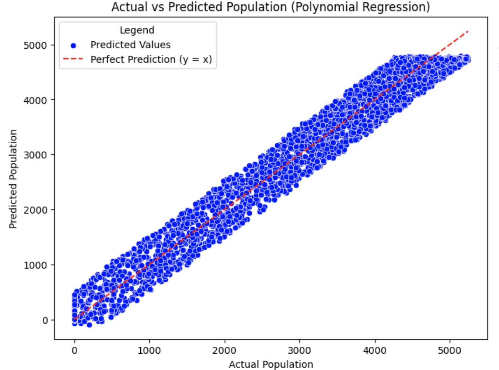
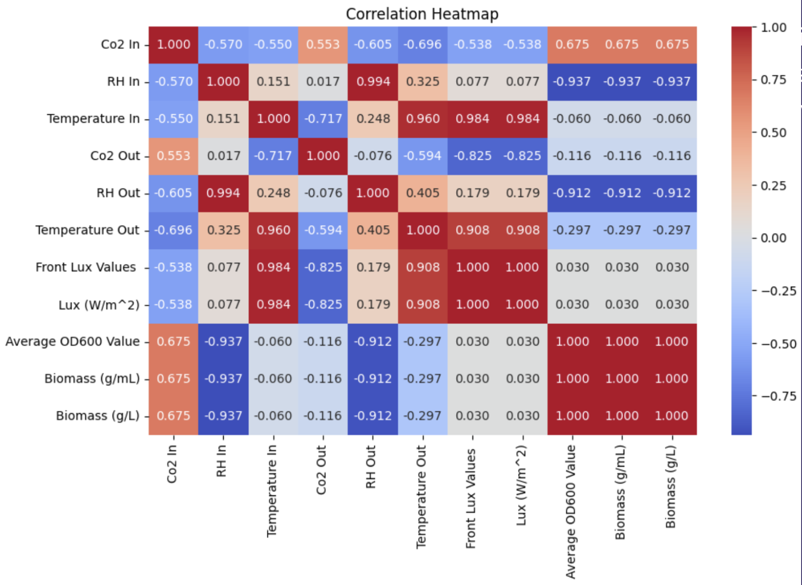
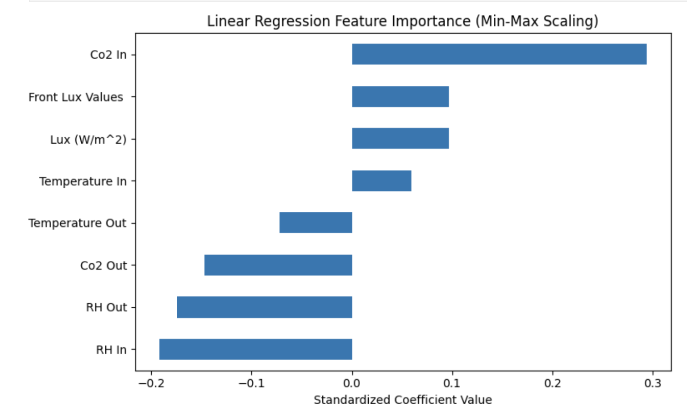
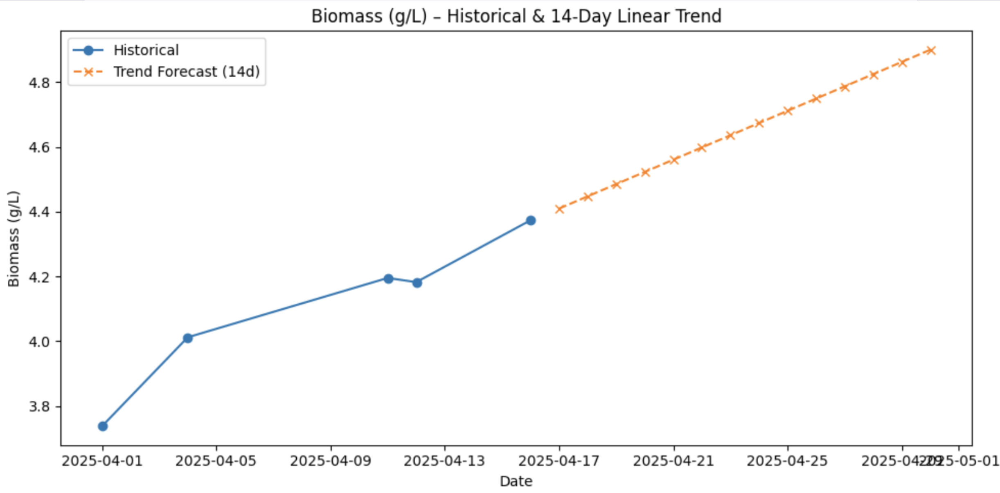
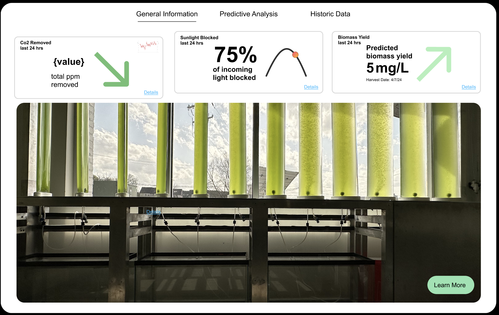

Human-Centered AI · Machine Learning · Data Visualization · Team of 5
A research project exploring what happens when you stop asking "how accurate is the model" and start asking "can anyone actually understand it."
01 — The Problem
Machine learning is everywhere. It predicts weather, recommends movies, monitors crops, and now, in our case, tracks microalgae growing inside a building facade. The models themselves are often quite good. The problem is that the outputs land in front of people who have no idea what they are looking at, and no way to decide whether to trust them.
This is the explainability gap. The space between what a model knows and what a person can understand. Our team wanted to find out whether thoughtful data visualization could close it, using a genuinely unusual real-world system as our test case.
02 — The Context
EcoClosure, founded by Dr. Kyoung Hee Kim from the Architecture department at UNC Charlotte, developed Biochromic Window systems, a building envelope technology that integrates living microalgae directly into a facade. The algae grow inside bioreactors embedded in the building's exterior, and as they grow, they regulate light, reduce heating and cooling loads, capture CO2, and help push buildings toward carbon neutrality.
These systems are already installed in the Storrs building on campus and at the Innovation Barn near Uptown Charlotte. The question our project took on was simpler than the technology: can the people managing these systems understand what the data is telling them, and can they trust a model predicting what comes next?
03 — My Role
That meant everything from data preprocessing and model selection to evaluation, visualization, and translating outputs into something a non-technical stakeholder could actually read. I worked across both datasets, the Kaggle algae growth dataset we used to test our approach, and the real sensor data collected from the Innovation Barn, running regression experiments, comparing scaling techniques, and generating the charts that ended up in the final dashboard and research paper.
04 — Phase 1: Kaggle Dataset
Before we had data from the Innovation Barn, we used a Kaggle dataset called Research on Algae Growth. It had 9,783 data points and 8 features: light, nitrate, phosphate, iron, carbon dioxide, temperature, pH, and algae population. The goal was to find a regression model that could accurately predict algae growth before applying anything to real sensor data. We used a 70/30 training and testing split and ran three model types.
Linear Regression
R² −0.001
Performed worse than simply predicting the mean for every input. Feature scaling did not help in any meaningful way.
Polynomial Regression ★ Best
R² 0.961
Explained over 96% of variance in algae population. Tight cluster of points around the perfect prediction line in the actual vs. predicted scatterplot.
Random Forest
R² 0.958
Close to polynomial but slightly lower, likely because the data favored smooth functional approximations over discrete decision tree splits.
Both non-linear models confirmed the same thing: the relationship between these environmental inputs and algae growth is genuinely non-linear, and the model needs to be built for that.

Polynomial regression: actual vs. predicted — blue dots are test samples, red dashed line is perfect prediction
05 — Phase 2: Real-World Data
Transitioning from Kaggle to real-world data was humbling in the best way. We collected sensor measurements from the Innovation Barn's Biochromic Window system: internal and external temperature, relative humidity, carbon dioxide concentration, and light intensity in lux. Biomass yield in grams per liter was manually recorded as the target variable.
Due to sensor calibration issues and the early stage of the deployment, we ended up with only five usable data points with complete and accurate records across all variables. The training and testing split was 60/40, which translated to three training points and two testing points. The models we ran were always going to be proof of concept at this scale, and we were consistent about saying so.
Before running any models, we built a correlation heatmap to understand the relationships between features. It immediately showed that Average OD600, Biomass in grams per liter, and Biomass in grams per milliliter were essentially measuring the same thing in different units. We selected Biomass in grams per liter as our target variable and moved on.

Correlation heatmap — red boxes in the right corner show the three biomass measurements are essentially equivalent

Feature importance based on coefficient magnitudes — CO2 In is the strongest predictor, temperature in/out the weakest
06 — The Dashboard
This is where the machine learning work connected to the human-centered design work. We built an interactive React dashboard that displayed current microalgae biomass data, a 14-day forward projection using the linear regression model with Min-Max scaling, and AI-generated explanations describing how the predictions were produced.
The visualization overlaid five days of historical biomass data, shown as a blue line, with the 14-day predicted trend, shown in orange. The goal was to give someone with no ML background a way to see what the model was doing and decide whether it made sense given what they already knew about the system.
Explainability is not a feature you add at the end. It is the thing you design around from the start.

Five-day historical data (blue) alongside 14-day predicted trend (orange) — designed for non-technical stakeholders

Dashboard mockup — overlaying historical trends with model predictions for non-technical stakeholders
07 — Limitations, Honestly
The Innovation Barn model is proof of concept. The 60/40 split, the sensor calibration issues, the small sample size — all of it means the R² of 0.911 should be read as encouraging rather than definitive. We were consistent about saying so in the paper.
The other honest limitation is that the predictive model was not fully integrated into the React dashboard at the time of submission. The visualizations were there. The model outputs were there. The pipeline connecting live sensor input to real-time dashboard predictions was still in progress.
08 — What Comes Next
The clearest next step is more data from the Innovation Barn as the sensors stabilize and deployment matures. With a larger dataset, the linear model's performance can be validated more rigorously and the feature importance findings can be tested across different seasons and conditions.
Beyond that, the goal is live sensor integration so the dashboard updates in real time rather than from uploaded files, expanded variables including ecological factors from other sites like Woodward, and a version of the interface optimized for tablets and mobile so the people actually managing these systems can check in from wherever they are.
Impact
And a clearer sense of what it actually takes to make machine learning usable for people who did not build it.